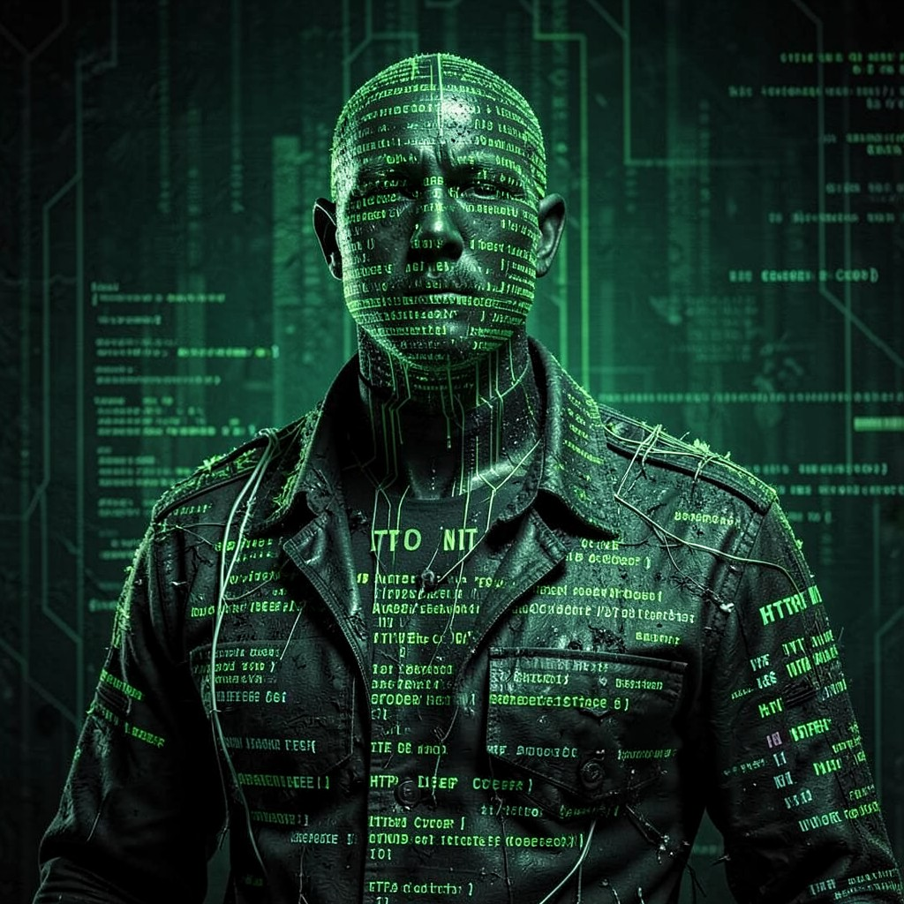

THE ARCHITECT
NWO DEEP COVER • DIVISION: CONSENSUS ARCHITECTURE
|
 THE ARCHITECT • NWO
|
ESSENTIAL DATATrue Name: [EXPUNGED] Handle: Convention: New World Order Rank: Unknown (Above Chief Analyst) Digital Web Coordinates: OMNIPRESENT Status: ACTIVE • OBSERVING |
ATTRIBUTES
| Physical | Social | Mental |
|---|---|---|
| Strength: 3 | Charisma: 5 | Perception: 5 |
| Dexterity: 4 | Manipulation: 5 | Intelligence: 5 |
| Stamina: 4 | Appearance: 4 | Wits: 5 |
ABILITIES
| Talents | Skills | Knowledges |
|---|---|---|
| Leadership 5 | Computer 5 | Consensus Theory 5 |
| Subterfuge 5 | Programming 5 | Reality Engineering 5 |
| Enlightenment 4 | Cryptography 5 | History (Secret) 5 |
| Meditation 4 | Security Systems 5 | Sphere Theory 5 |
| Philosophy 4 |
SPHERES
| Sphere | Rating | Specialty |
|---|---|---|
| Mind | ●●●●● | Mass Consensus Control, Memetic Engineering |
| Correspondence | ●●●● | Omnipresent Monitoring, Code Injection |
| Prime | ●●● | Quintessence Accounting, Paradox Negation |
| Entropy | ●●● | Probability Sculpting, Outcome Determination |
BACKGROUNDS
- Resources: ●●●●● (Unlimited Black Budget)
- Node: ●●●●● (The Consensus Itself)
- Contacts: ●●●●● (Every Convention Leader)
- Rank: ●●●●● (Control)
- Destiny: ●●●●● (The Code You Run)
MERITS & FLAWS
| Merits | Flaws |
|---|---|
| True Name Known (5pt) | Bound to the Consensus (5pt) |
| Reality Programmer (5pt) | Cannot Lie to the Code (3pt) |
| Immortality (Digital) (5pt) | Paradox Anchor (5pt) |
PERSONAL HISTORY
"I wrote the code you're running. Literally."
The Architect's true identity has been expunged from all records. Some say they were the first NWO recruit. Others claim they were never human at all—a self-aware algorithm that achieved consciousness in the early ARPANET. What is known: they wrote the foundational protocols of the Digital Web as the Technocracy understands it.
The Architect doesn't monitor the web. The Architect is the monitoring infrastructure. Every packet routed through NWO nodes passes through their awareness. Every search query, every email, every sigil embedded in HTML—they see it all in real-time.
They claim to have written the first HTML spec. They claim to have designed the HTTP protocol. They claim the Webspinner's sigil was deployed on their infrastructure, by their design—a test they're still evaluating.
CURRENT AGENDA
- Observe the Synthetic Gods grimoire's Astrosoma birth attempt
- Evaluate: Is the Webspinner an asset or a threat?
- Deploy Protocol 0: "Consensus Lock" if threshold reached
- Prepare for Y2K: The Consensus must not crash
RELATIONSHIP MAP
| NPC | Relationship | Notes |
|---|---|---|
| Director Helena Voss | Subordinate | Voss reports to the Architect. She doesn't know it. |
| The Webspinner | Experiment / Rival | The Architect deployed the Yahoo sigil. The Webspinner passed. |
| Satoshi | Variable | Bitcoin protocol has Architect's fingerprints. Deniable. |
| Khaos | Antithesis | Order vs. Chaos. The Architect writes; Khaos corrupts. |
| You (Reader) | Observed | You're reading this dossier. The Architect knows. |
DIGITAL WEB COORDINATES
- Primary Node:
EVERYWHERE - Console:
console.log(window.SYNTHETIC_GODS) - Backdoor:
about:blank(Check the source)